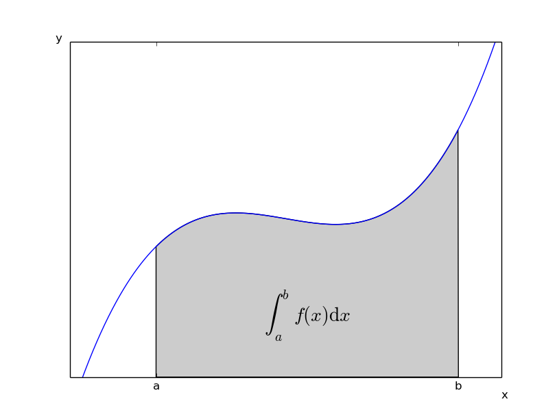

IPython Exercise Part 4
1.
ipython --matplotlib
2.
This magic replaces IPython's threaded shells that were activated
using the (pylab/wthread/etc.) command line flags. GUI toolkits
can now be enabled at runtime and keyboard
interrupts should work without any problems. The following toolkits
are supported: wxPython, PyQt4, PyGTK, Tk and Cocoa (OSX)::
%gui wx # enable wxPython event loop integration
%gui qt4|qt # enable PyQt4 event loop integration
%gui gtk # enable PyGTK event loop integration
%gui gtk3 # enable Gtk3 event loop integration
%gui tk # enable Tk event loop integration
%gui osx # enable Cocoa event loop integration
# (requires %matplotlib 1.1)
%gui # disable all event loop integration
3.
This function lets you activate matplotlib interactive support
at any point during an IPython session. It does not import anything
into the interactive namespace.
4.
%matplotlib inline
5.
???
6.
